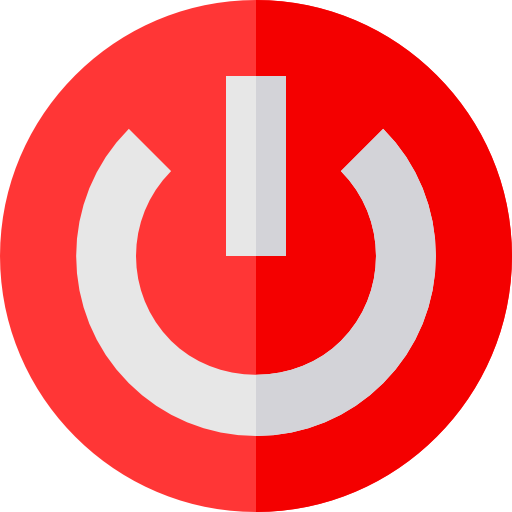

<ion-header [translucent]="true">
  <ion-toolbar>
    <ion-title style="color: black; padding: 15px; background-color: #e8aa9e; font-size: 20px;" class="ion-text-center">
      <button (click)="volver()" style="background-color: #e8aa9e;"></button>
        {{this.userService.user?.correo}}
      <button (click)="salir()" style="background-color: #e8aa9e;"></button>
    </ion-title>
  </ion-toolbar>
</ion-header>


<ion-content [fullscreen]="true">

  <ion-card *ngFor="let foto of fotos" style="background-color: #FFD83B; padding-bottom: 5px; margin-bottom: 15px;">
    
    <ion-grid style="padding: 0px; margin: 0px;">
      <ion-row size="auto" class="ion-align-items-center ion-justify-content-between">
        <ion-col >
          <label for="" style="font-size: 18px; color: black;">Por: {{foto.user.split("@")[0]}}</label>
        </ion-col>
        <ion-col >
          <label for="" style="font-size: 18px; color: black;">{{getDate(foto.date)}}</label>
        </ion-col>
        <ion-col size="auto">
          <ion-label style="font-size: 30px; color: black;">{{foto.votes.length}}</ion-label>
          <button (click)="this.vote(foto)" style="background-color: #FFD83B; width: 45px;"></button>
        </ion-col>
      </ion-row>
    </ion-grid>
  </ion-card>


  <ion-fab slot="fixed" vertical="bottom" horizontal="start" style="margin-bottom: 20px; margin-left: 20px;">
    <ion-fab-button (click)="irGraficos()">
      
    </ion-fab-button>
  </ion-fab>
  <ion-fab slot="fixed" vertical="bottom" horizontal="end" style="margin-bottom: 20px; margin-right: 20px;">
    <ion-fab-button (click)="sacarFoto()">
      
    </ion-fab-button>
  </ion-fab>
  <div style="margin-bottom: 100px;"></div>
</ion-content>